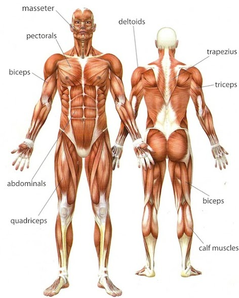

האקטומורף
לאקטומורפים יש בדרך כלל מראה גוף רזה וליניארי . הם יכולים להוריד במשקל וברמת השומן די בקלות ובדרך כלל יש להם רמת שומן גוף נמוכה יחסית . למרות זאת, לאקטומורפים יש בדרך כלל קושי בפיתוח מסת שריר . מבנה הגוף האקטומורפי המכונה ה"בננה" מאופיין ע"י ידיים ורגליים ארוכים במיוחד , פלג גוף עליון קצר וקטן יחסית, מצח גבוה, כתפיים צרות יחסית . לפי התיאוריה של שלדון, יש להם אחוז גבוה יותר של רקמה עצבית. מבנה הגוף של האקטומורף הקיצוני הוא שברירי ועדין . העצמות קלות יותר, המפרקים קטנים והשרירים דלים. הגפיים ארוכות יותר בדרך כלל והכתפיים מדלדלות . האקטומורפים נראים בדרך כלל גבוהים יותר ממה שהם באמת , זאת בגלל הגפיים הארוכים ומסת השריר הדלה בהם. לאנשים אלה יש בדרך כלל אצבעות רגליים וידיים ארוכים יותר, וצוואר ארוך יותר. תווי הפנים חדים יותר , כיוון שמבנה הפנים משולש והלסת התחתונה מוצרת . אקטומורפים נוטים לסבול יותר מטמפרטורות קיצוניות היות ושטח הפנים של גופם גדול ביחס לכמות הבידוד של השרירים והשומן . השיער נוטה להיות דק, גדל מהר ובד"כ קשה לסידור. כשאתם יושבים וקוראים את הקטגוריות האלה, יכול להיות לכם קושי להגדיר את עצמכם כשייכים לאחת מהקטגוריות בדיוק. מעטים האנשים שנופלים בדיוק לאחת הקטגוריות, ורוב האנשים מוגדרים יותר כאקטו-מזומורף או כאנדו-מזומורף. בכל מקרה, הנה כמה טיפים שיכולים לעזור להפיק את המרב מסוג הגוף שיש לנו.
אסטרטגיית אימון לאקטומורפים אמנם אימון אירובי שורף קלוריות ושומן, דבר שלא הכרחי כל-כך לאקטומורף, עבודה זו נחוצה כדי להגיע לרמת כושר גופני המתאימה לבניית מסת שריר . חשוב לבנות סיבולת ע"י הרגלת הלב והריאות למאמץ , כיוון שסיבולת זו תידרש בבניית מסת שריר. לכן כדאי לבצע אימון אירובי 3-4 פעמים בשבוע, ולכוון לכ- 20 דקות אימון בעצימות בינונית עד גבוהה . כמות כזו תספיק לפתח סיבולת לב ריאה בלי זמן רב מדי של שריפת קלוריות. כדאי לבנות את מסת השריר בעזרת 2-4 סטים של תרגילים לכל חלק בגוף , ולהשתמש במשקלים בינוניים-גבוהים שתוכלו להרים בצורה נכונה ובתנועה מלאה במשך 6-10 חזרות . כדאי להוסיף למשקל ולאמן את השרירים לרמה בה לא תוכלו להרים חזרה נוספת לפני שתסיימו את האימון לאותו יום . כדאי לעשות ימים מופרדים לאימונים כך שתאמנו חלקים שונים של הגוף בימים שונים , ולא לשכוח לתת לגוף חומרי גלם שהוא צריך בכדי ליצוא מסת שריר. הוספת כ- 1000 קלוריות ביום, הכוללות חלבונים, יהיה רעיון מצוין. יש לזכור שבנוגע למבנה הגוף כולנו שונים ואין הרבה שנוכל לעשות כדי לשנות את המבנה שלנו כדי לדמות למבנהו של אחר . לכן, כשתתאמנו ותתאימו את תכנית התזונה שלכם, אל תשוו את עצמכם לאף אחד אחר . השאיפה צריכה להיות הכי טוב שאתם יכולים להיות, היות ואתם נוצרים כאדם אינדיבידואלי וייחודי.